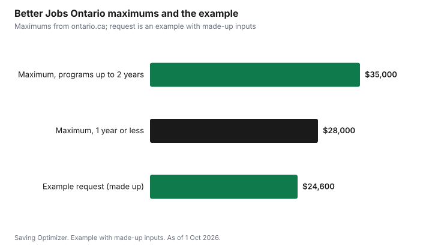

Education · Canada
Better Jobs Ontario: Up to $28,000 for Retraining After a Layoff
Better Jobs Ontario pays for skills training and living costs for Ontario residents who have been laid off, or who have been unemployed for 12 weeks or more in a low-income household. You can apply for up to $28,000 for training that takes one year or less, or up to $35,000 for programs longer than one year and up to two years. The funding can cover tuition, books, supplies and devices, transportation and a basic living allowance of up to $500 a week. You apply through an Employment Ontario service provider, who helps you build the case, and you must compare at least three training providers, including a public college and a career college. You can apply while on EI, Ontario Works or ODSP.
Key takeaways
- Up to $28,000 for training of one year or less; up to $35,000 for one to two years.
- Covers tuition, books, instructional costs, transportation and up to $500 a week for living costs.
- Laid-off workers qualify; so do people unemployed 12 weeks or more in low-income households.
- You can apply while receiving EI, Ontario Works or ODSP.
- Research at least three schools, including a public college and a career college.
- Example with made-up inputs: a 40-week program funded at $24,600.
What the program pays for
Ontario says Better Jobs Ontario provides skills training for in-demand jobs and financial support, and aims to help you rejoin the workforce quickly. It funds short-term programs that take 52 weeks or less, including micro-credentials, and longer programs of up to two years. The amount you receive is based on your individual needs and the funding available, and the program supports the most cost-effective training options.
| Item | Detail |
|---|---|
| Maximum for training of 1 year or less | Up to $28,000 |
| Maximum for programs over 1 year and up to 2 years | Up to $35,000 |
| Costs covered | Tuition; books; other instructional costs, including student fees, supplies and electronic devices; transportation |
| Basic living allowance | Up to $500 per week |
| Possible extra funding | Child care, disability-related supports, living away from home, literacy and essential skills (Get Set), language training |
| How the amount is set | Individual needs and available funding |
Who qualifies
Ontario says you may qualify if you have been laid off and are not working, have been laid off and are working a temporary job just to cover costs, or have not been laid off but have been unemployed for 12 weeks or longer and are part of a low-income household. You can still apply if you receive Employment Insurance, Ontario Works or the Ontario Disability Support Program. Quitting a job is not on the list, so check with a service provider if your situation does not fit neatly.
| Your situation | Can apply? |
|---|---|
| Laid off and not working | Yes |
| Laid off and working a temporary job to cover costs | Yes |
| Not laid off, unemployed 12 weeks or more, low-income household | Yes |
| Receiving EI, Ontario Works or ODSP | Yes, you can still apply |
| Employed in a permanent job | Not one of the listed paths |
How to apply
You apply with an Employment Ontario service provider, whose staff help you decide whether the program fits and help you complete the application. Ontario says you may have to show how long you have been unemployed or in a temporary job and looking for work, your education, your previous jobs and their skills, and the skills you want and where you can get them. You also provide information for a financial needs assessment, such as tuition and book costs and your gross household income.
Ontario also requires school research. Training is delivered by public colleges, career colleges, universities, Indigenous Institutes and school boards. You must research at least three training institutions, including at least one college of applied arts and technology and one career college. If you pay your own tuition and training costs, you need to research only one.
| Item | What to gather |
|---|---|
| Work history | Previous jobs, how long you worked there, skills used |
| Job search record | How long you have been unemployed or in a temporary job, and your search |
| Education | Highest level completed |
| Training plan | Skills you want, the job they lead to, three schools compared |
| Costs | Tuition, books and other costs from each school |
| Income | Gross (before-tax) household income |
EI and taxes
If you are on EI, tell Service Canada about any training before it starts. Ottawa says provinces can refer EI clients to training programs, and if you are approved by a designated authority for referred training, you may keep receiving benefits while you attend; without a referral, you must stay available for work. Ask your Employment Ontario provider whether your approval counts as a referral and what to report. EI weeks are not extended to cover a long course. See EI and going back to school.
On the tax side, the CRA says you cannot claim the tuition credit for fees paid by a federal, provincial or territorial job training program unless the amount is included in your income. The same eligibility rule flows through to the Canada training credit. So if Better Jobs Ontario pays your tuition directly, do not claim that tuition yourself; if you pay part of it, ask the school how your receipt is split.
Example with made-up inputs
These numbers are an example with made-up inputs. Dana is laid off from a warehouse job and wants to train as a medical office administrator. Dana compares a public college and two career colleges and chooses a 40-week college program with $6,800 of tuition, $900 of books and supplies and a $900 laptop. Dana's Employment Ontario provider applies for those costs, $1,000 of transit and a living allowance of $375 a week. The request totals $24,600, under the $28,000 maximum for training of one year or less. The final amount depends on Dana's needs assessment and available funding.
| Item | Amount |
|---|---|
| Tuition | $6,800 |
| Books and supplies | $900 |
| Laptop | $900 |
| Transportation | $1,000 |
| Living allowance ($375 a week for 40 weeks) | $15,000 |
| Total request | $24,600 |
| Maximum for training of 1 year or less | $28,000 |

Steps
- Find an Employment Ontario service provider near you and book an appointment.
- Bring your record of employment, job search notes and a target job.
- Price your program at three schools, including a public college and a career college.
- Gather household income details for the needs assessment.
- If you are on EI, declare the training to Service Canada before it starts.
- Wait for written approval before you pay tuition or quit a temporary job.
For more help after a job loss, see the Canada training credit and free library courses while you wait for approval.
Sources
- Government of Ontario, Better Jobs Ontario, ontario.ca (updated 25 Sep 2026), as of 1 Oct 2026.
- Employment and Social Development Canada, Employment Insurance and training programs, canada.ca (Wayback copy of the page modified 10 Nov 2025), as of 1 Oct 2026.
- Canada Revenue Agency, Eligible tuition fees, canada.ca (Wayback copy), as of 1 Oct 2026.
- The worker's program, costs and allowance in the example are an example with made-up inputs.
Frequently asked questions
How much does Better Jobs Ontario pay?
Up to $28,000 for training of one year or less, and up to $35,000 for programs over one year and up to two years, based on your needs and available funding.
Does Better Jobs Ontario pay a living allowance?
Yes, a basic living allowance of up to $500 per week, along with tuition, books, instructional costs and transportation.
Who qualifies for Better Jobs Ontario?
People who were laid off and are not working or are in a temporary job to cover costs, and people unemployed 12 weeks or longer in a low-income household.
Can I get Better Jobs Ontario while on EI?
Yes. Ontario says you can still apply if you receive EI, Ontario Works or ODSP.
How do I apply for Better Jobs Ontario?
Through an Employment Ontario service provider, who helps you complete the application and needs assessment.
How many schools do I have to research?
At least three, including at least one public college and one career college. Only one if you pay for training yourself.
Researched and drafted with AI assistance and fact-checked against official Canadian sources. How we create content.
Disclosure: Saving Optimizer may earn a commission if a partner link is added later, such as a course or career college offer type. No partnership is claimed on this page. Education only, not legal or tax advice.